Encuentra el sistema de racks ideal para tu operación
Compara soluciones de almacenamiento industrial y encuentra una configuración adaptada a tus productos, espacio disponible y necesidades logísticas.
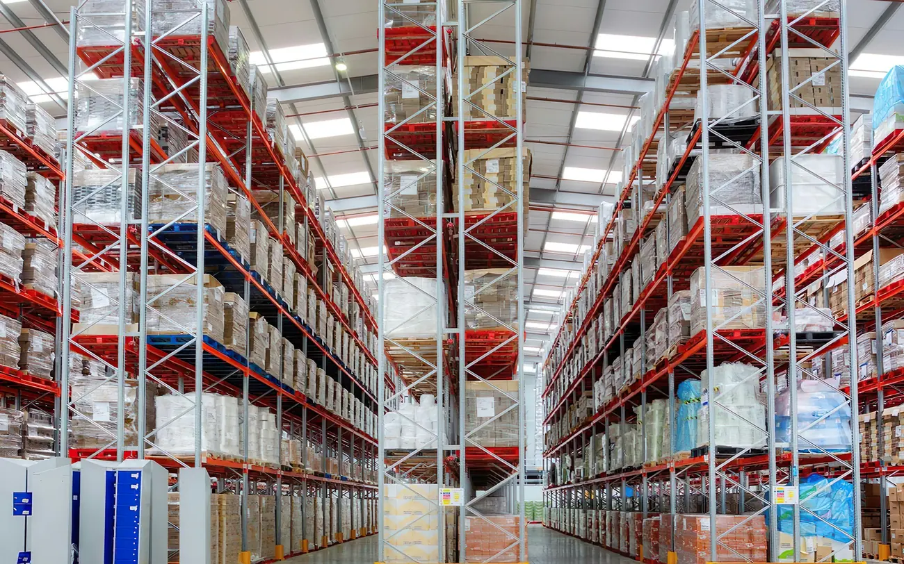
¿Qué necesitas resolver en tu bodega?
Elige la situación que más se parece a la tuya y te mostramos qué sistemas suelen funcionar.
Elige una situación
Verás una explicación corta y los sistemas que conviene evaluar primero. Si ninguna se parece a tu caso, cuéntanoslo en el formulario.
Recomendación orientativa: no sustituye el estudio técnico de cargas, dimensiones, anclajes y condiciones de instalación que se hace antes de cotizar.
Catálogo de sistemas
Cada sistema lleva una letra, como las señales de pasillo de una bodega. Úsala para comparar y para pedir tu cotización.
Por confirmar Ajustar el catálogo a los sistemas que el proveedor fabrica o instala.
7 sistemas
-
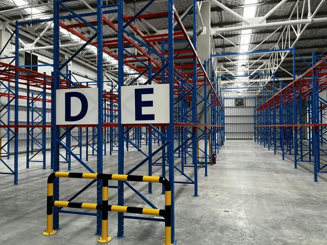
Rack selectivo
Cada pallet tiene su propia posición y se alcanza sin mover otros. El sistema más versátil para centros de distribución.
-
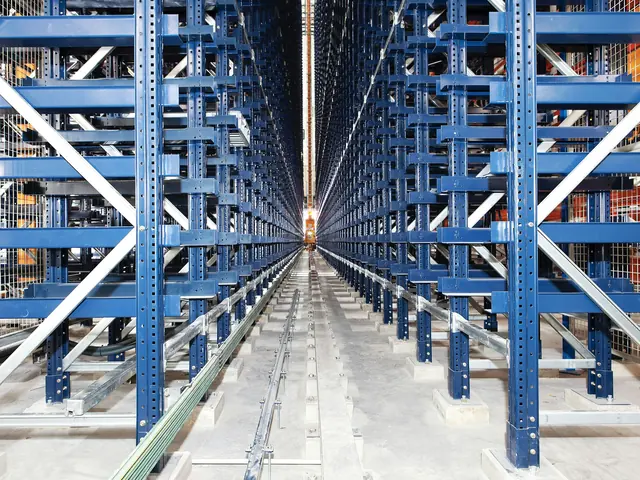
Drive-in y drive-through
El montacargas entra en la estructura y los pallets se acumulan en calles. Máximo aprovechamiento cuando hay mucho volumen de pocos productos.
-
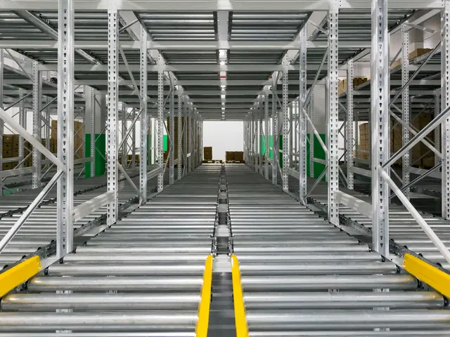
Rack dinámico
Rodillos inclinados hacen avanzar la carga por gravedad: se carga por un lado y se despacha por el otro. Útil con productos de fecha de vencimiento.
-
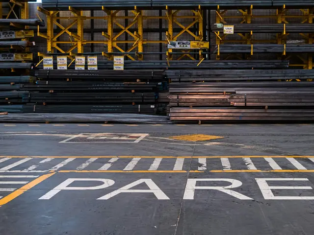
Cantilever
Brazos en voladizo sin parales al frente para tubería, perfilería, láminas y madera. Se puede montar a una o dos caras.
-
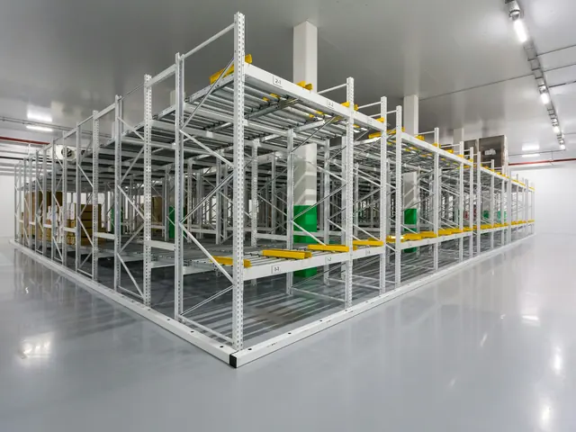
Estantería liviana
Entrepaños ajustables para archivo, repuestos pequeños y productos de bajo peso. Rápida de montar y de reconfigurar.
-
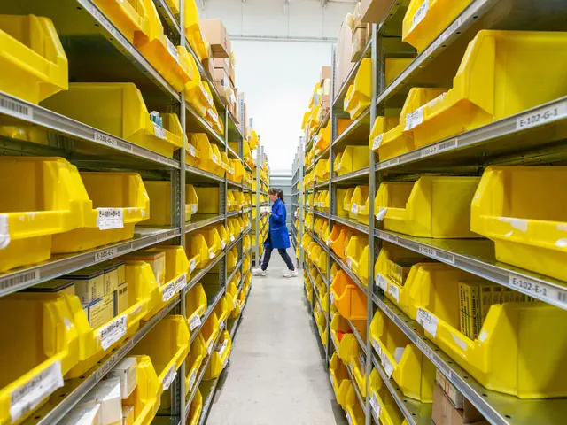
Estantería semipesada
Para preparación de pedidos y referencias de rotación alta. Admite gavetas, divisores y, en altura, pasarelas para un segundo nivel.
-
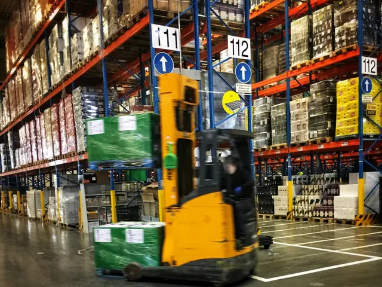
Rack para carga pesada
Bastidores y largueros reforzados para cargas concentradas. Se dimensiona con el peso real por posición y el equipo de manejo.
-
Entrepisos y configuraciones especiales
Mezzanines, combinaciones de sistemas o medidas fuera de catálogo. Cuéntanos qué necesitas y lo diseñamos sobre tu plano.
Ningún sistema coincide con este filtro.
Comparar por aplicación y tipo de carga
Una vista rápida para descartar opciones. La elección final depende del estudio de tu bodega.
Desliza la tabla para ver todas las columnas.
| Sistema | Aplicación | Tipo de carga | Acceso y rotación | Uso recomendado |
|---|---|---|---|---|
| Rack selectivo | Centros de distribución, manufactura | Pallets de peso medio a alto | Directo a cada pallet; cualquier rotación | Muchas referencias con pocas unidades de cada una |
| Drive-in | Alimentos, bebidas, consumo masivo | Pallets homogéneos | Por calle; último en entrar, primero en salir | Mucho volumen de pocas referencias |
| Rack dinámico | Perecederos, líneas de producción | Pallets o cajas | Por gravedad; primero en entrar, primero en salir | Control de fechas y separación entre carga y despacho |
| Cantilever | Ferreterías, metalmecánica, madereras | Tubos, perfiles, láminas, madera | Lateral, sin parales al frente | Materiales largos o de forma irregular |
| Estantería liviana | Archivo, repuestos, comercio | Cajas y piezas de bajo peso | Manual | Inventarios pequeños y cambiantes |
| Estantería semipesada | E-commerce, repuestos, picking | Cajas, gavetas, producto suelto | Manual, alta rotación | Preparación de pedidos con muchas referencias |
| Carga pesada | Materias primas, industria pesada | Pallets y piezas de alto peso | Montacargas o puente grúa | Cargas concentradas que exigen refuerzo |
¿Qué sistema necesita tu bodega?
Tres preguntas definen casi siempre el punto de partida. Respóndelas en el formulario y avanzamos más rápido.
-
¿Qué guardas?
- Pallets completos
- ABG
- Cajas o piezas sueltas
- EF
- Material largo
- D
-
¿Cómo lo mueves?
- Montacargas
- ABDG
- A mano o con carro
- EFC
-
¿Cuántas referencias y qué rotación?
- Muchas referencias
- AF
- Pocas, en gran volumen
- B
- Hay que respetar fechas
- C
¿Tu operación combina varias respuestas? Es lo más común: muchas bodegas usan dos o tres sistemas.
Cotizar mi proyecto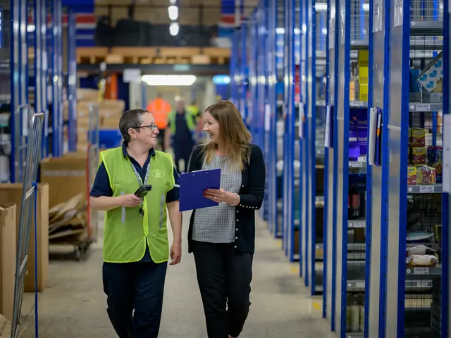
Lo que cambia en la operación
Cada producto tiene su lugar
Ubicaciones definidas y señalizadas: el inventario deja de depender de quién conoce la bodega.
Alcanzar la mercancía sin mover otra
Pasillos dimensionados para tus equipos y sistemas elegidos según cómo entra y sale el producto.
Más capacidad en el mismo metro cuadrado
La altura libre se convierte en posiciones de almacenamiento antes de pensar en otra bodega.
Instalaciones de referencia
Por confirmar Fotos de stock. Reemplazar por instalaciones propias autorizadas por el cliente.
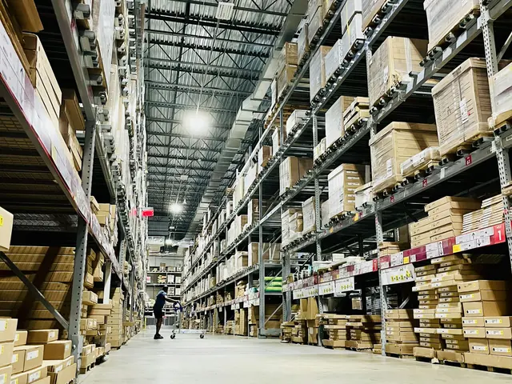
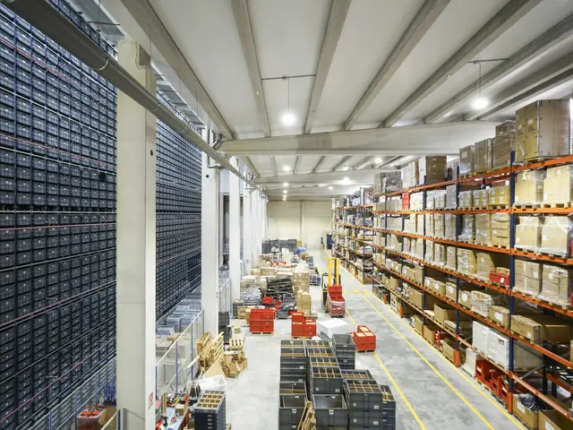
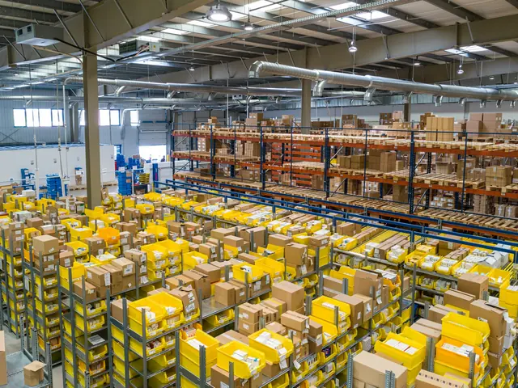
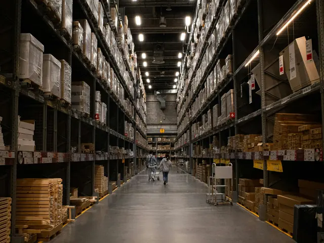
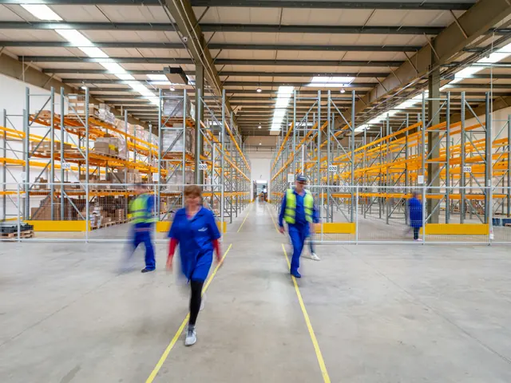
Así preparamos tu cotización
Sin compromiso de compra.
Envías la solicitud
Con lo que sepas: tipo de producto, medidas aproximadas, fotos o plano.
Precisamos los datos
Te contactamos para resolver dudas: peso por posición, altura libre, equipos de manejo.
Visita o revisión del plano
Medimos la bodega o trabajamos sobre tu plano si ya lo tienes.
Recibes la propuesta
Distribución sugerida, sistema recomendado, cantidades y valor, listos para comparar.
Preguntas frecuentes
Instalación
¿Ustedes instalan los racks?
La propuesta puede incluir suministro e instalación. Confirmar si el proveedor instala con personal propio.
¿Hay que detener la operación durante el montaje?
No necesariamente. El montaje se puede programar por zonas para que la bodega siga funcionando.
Personalización
¿Fabrican a la medida de mi bodega?
Las alturas, frentes y profundidades se ajustan a tu espacio y a tus cargas dentro de lo que permite cada sistema. Confirmar si el proveedor fabrica o solo comercializa.
¿Puedo combinar varios sistemas?
Sí, y suele ser lo recomendable: por ejemplo, selectivo para pallets y semipesada para picking en la misma bodega.
Capacidad
¿Cuánto peso soporta cada nivel?
Depende del sistema, de los perfiles y de la distancia entre apoyos. Se calcula con el peso real de tu carga y queda indicado en la placa de capacidad de cada módulo.
¿Qué pasa si mi carga cambia?
Antes de cambiar el tipo de carga o mover niveles se debe revisar la capacidad. Avísanos y verificamos la configuración.
Mantenimiento
¿Los racks necesitan mantenimiento?
Necesitan inspección periódica, sobre todo después de impactos de montacargas: un parante golpeado reduce la capacidad del módulo.
¿Venden repuestos y protecciones?
Defensas de cabecera, protectores de parante y largueros de reposición pueden incluirse en la propuesta. Confirmar disponibilidad.
Solicita una propuesta
Solo te pedimos lo necesario para contactarte. Si ya elegiste un sistema, lo verás preseleccionado.
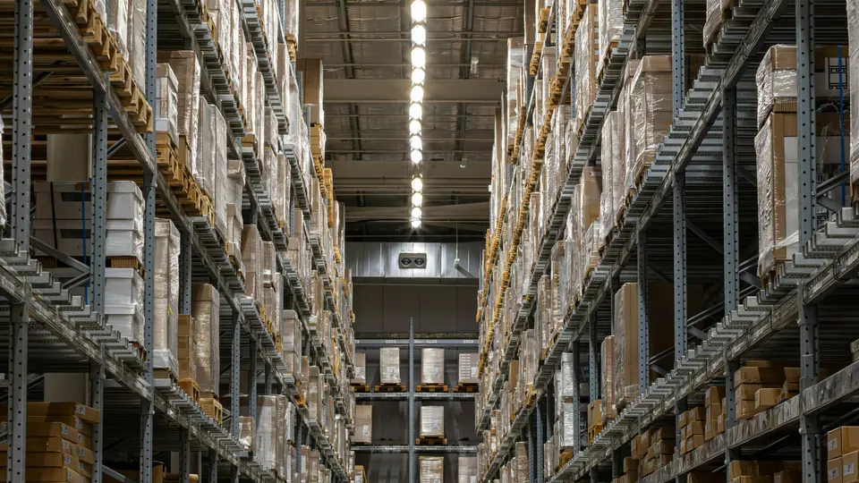